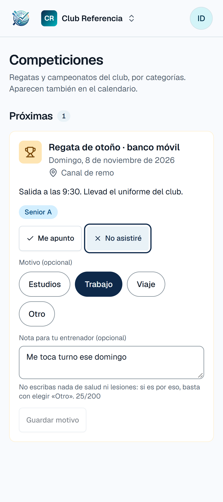
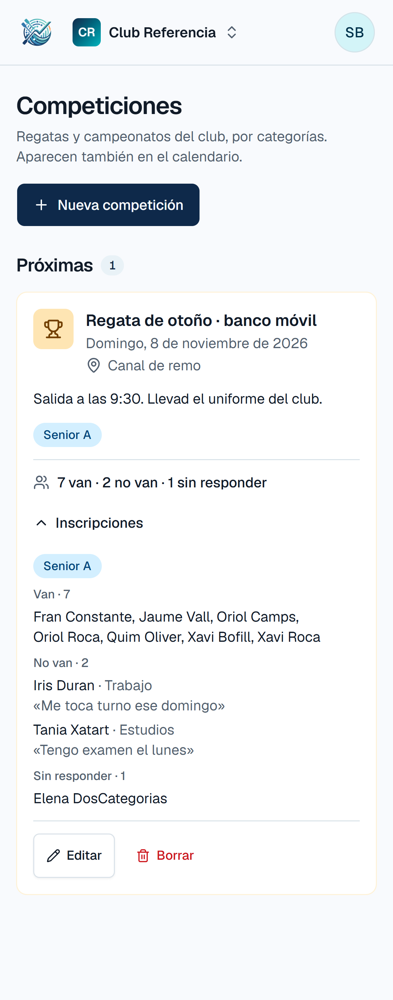
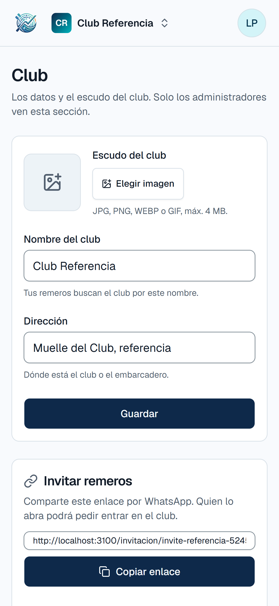

Inscripción a regatas y un sitio para el club.
- 1Me apunto o no asistiréPara el remeroNuevo
- 2Quién va y quién noPara el entrenadorNuevo
- 3Sección ClubPara el administradorNuevo
dorelta.es/pruebaDesliza →

En cada competición de su categoría, hasta el mismo día. Si no va, puede dejar el motivo y una nota para su entrenador.

«7 van · 2 no van · 1 sin responder» en cada competición, y la lista por categoría con los motivos.

Nueva sección «Club»: nombre, dirección y escudo, y el enlace para invitar a los remeros.
Y nueva sección «Club» para los datos y el escudo.